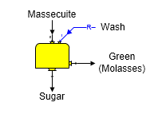
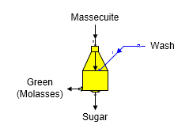
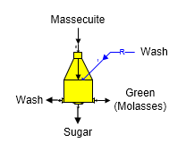

Sugars can simulate the operation of 2-Output (both Continuous and Batch) and 3-Output (Batch) centrifugals. The calculations are similar for both types. Centrifugal stations are used to separate sucrose crystals in massecuite from the mother liquor.
2-Output Centrifugal (Continuous) The shape for a continuous 2-Output Centrifugal station is shown in the diagram below. Massecuite goes into input port 0 and wash water (and/or steam, or syrup) goes into input port 1.

2-Output Centrifugal (Batch) The general shape for a batch 2-Output Centrifugal station is shown below with identification of the input and output flows. Massecuite goes into input port 0 and wash water (or syrup) goes into input port 1.

3-Output Centrifugal (Batch) The general shape for a batch 3-Output Centrifugal station is shown below with identification of the input and output flows. Massecuite goes into input port 0 and wash water (or syrup) goes into input port 1.

General Features Two types of centrifugal stations are available in Sugars: (1) 2-Output Centrifugal and (2) 3-Output centrifugal. Normally, 2-Output Centrifugals are continuous machines; whereas, 3-Output Centrifugals are batch machines. However, a batch machine can have two output flows instead of three. For both types of centrifugals, two input flows are required: one for massecuite (port 0), and one for wash (port 1). The wash flow in can be either: water, syrup, steam, or a combination of these flows. Sucrose solubility coefficients, color, temperature, and components of the output flows will be a result of the solubility coefficients, color, temperature and components of the massecuite and wash (water, syrup and/or steam) flows into the centrifugal and the separation performance of the centrifugal. The pressure of all output flow streams from a centrifugal will be at atmospheric pressure, regardless of the pressures of the flows into the centrifugal.
The performance of a centrifugal station is calculated by Sugars using actual data from an operating centrifugal. That is, data for the massecuite and wash flows into the centrifugal and data for the green, wash and sugar output flows from the centrifugal are entered into Sugars. This data is analyzed by Sugars to find the performance of the centrifugal station. The performance results are used to find the separation of mother liquor and sucrose crystals and the purging of the wash flow in to arrive at the characteristics of the green, wash and sugar flows out of the centrifugal during the balance calculations. Therefore, centrifugal performance calculations by Sugars, using actual data from an operating centrifugal, are used to find how the centrifugal in a model will process massecuite fed to it during the balance calculations. Centrifugal performance evaluations for each centrifugal station in a model give Sugars the necessary information to figure out how efficiently each centrifugal will separate the mother liquor and sucrose crystals for different massecuites. A centrifugal evaluation only applies to centrifugals of a similar design that are operated in a similar manner. The performance of centrifugal stations can have a significant impact on the overall sucrose recovery of a factory.
2-Output Centrifugal Properties
3-Output Centrifugal Properties
2-Output Centrifugal Evaluation